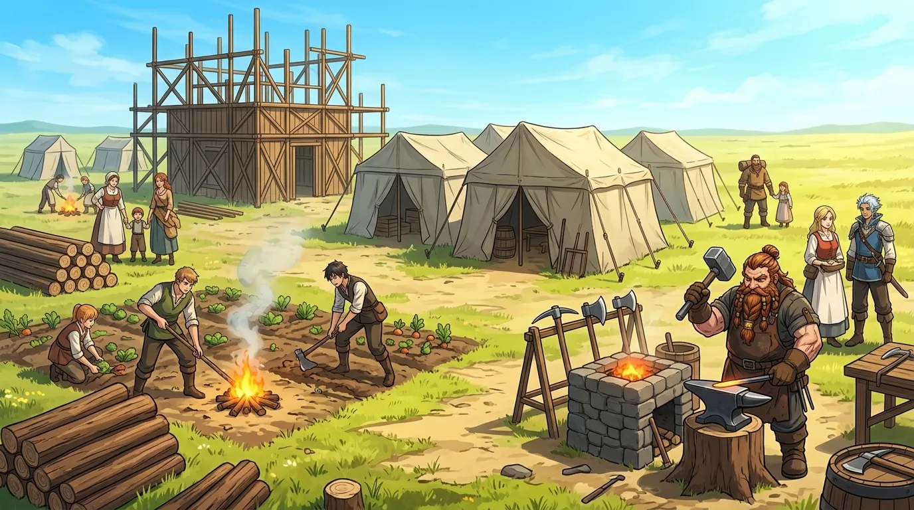
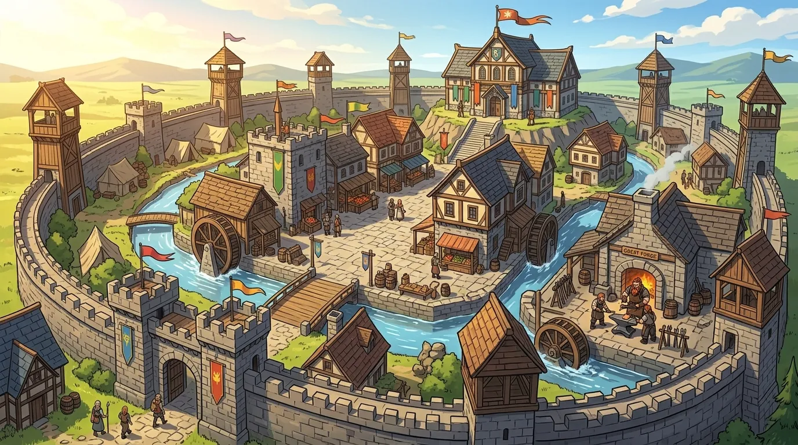
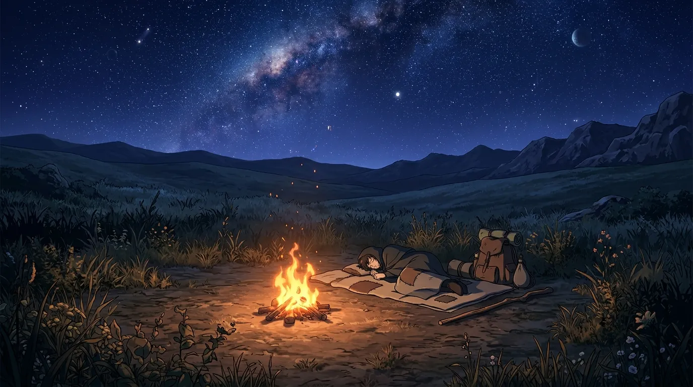
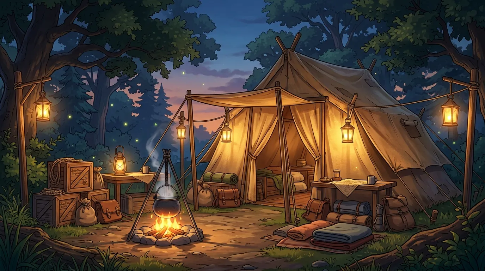
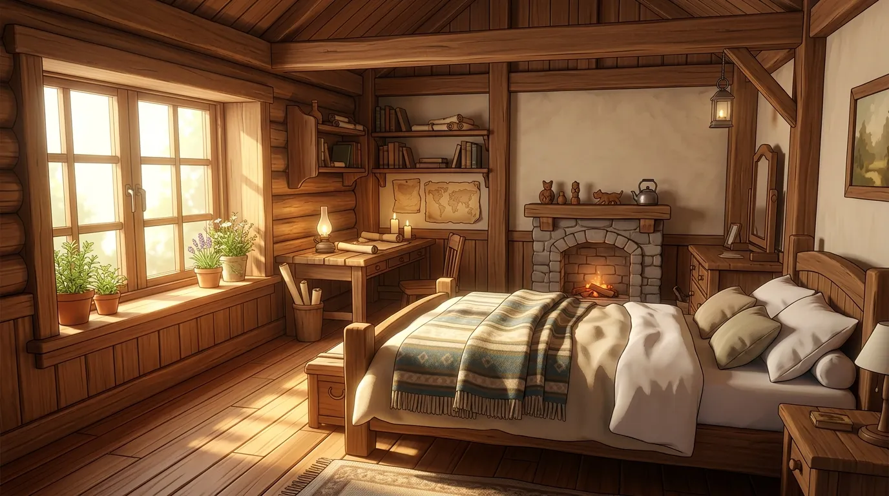
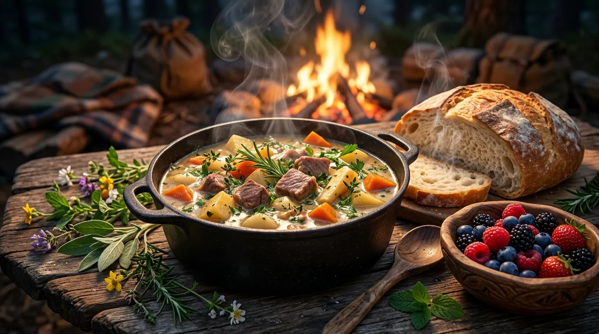

EXPLORE
探索で世界を知り、開拓で世界を変え、変わった世界を足場にさらに先へ。
生活と遠征の準備が、次の過酷な未踏域を切り拓く。
四つの段階が織りなす「冒険の循環」
開拓を楽しんだすべての時間が、次の未踏域を攻略する確かな力となる。
未踏の大地を探索・素材発見
地図にない渓谷や古代遺跡へ歩みを進め、未知の動植物や希少鉱石を採取。現地での観察が生死を分ける。
キャンプを開拓拠点へ育成
持ち帰った素材と現地住民の力を結集し、最初は小さな野営地だったキャンプを堅牢な開拓拠点へと発展させる。

STAGE 1 : 臨時野営地
STAGE 2 : 防衛開拓拠点生活の質が次の冒険を助ける
良質なベッドでの睡眠による疲労完全回復、寒暑に耐える温かな滋養料理、鍛え上げた武具が次の遠征の足腰となる。
整えた足を足場に、さらなる極限へ
前回の遠征では耐えられなかった猛吹雪や灼熱地帯へ突入。新たな拠点を築きながら、「世界の先端」の実証へと迫る。
準備が、次の冒険の運命を変える
HPやMPだけではない。過酷な未踏域を生き抜くためのリアルな探索コンディション。
HP & MP（生命と魔力）
環境ダメージやモンスターとの激戦で消耗。安全な休息や高品質な薬草で回復する基本生命線。
スタミナ（行動力）
崖登りや全力疾走、回避で消費。険しい高低差のある未踏域では、スタミナ管理が生死に直結する。
空腹・渇き・疲労
長旅で蓄積する疲労度。放置すると最大能力値が低下するため、定期的な補給と休息が不可欠。
寝床の進化がもたらす恩恵
どこで体を休めるかによって、翌朝の回復効率が劇的に変化する。

最低限の回復。夜間の冷え込みで疲労が残りやすい。

風雨を防ぎ、一定のスタミナと疲労を安全に回復。

疲労が完全解消され、次の探索時に経験値・スタミナ上限ボーナスが付与。
料理が生み出す環境適応効果

現地の食材と拠点の調理設備で、遠征目的に合わせた耐性バフを得る。
最低限のカロリー補給。追加の特殊バフは得られない。
疲労を癒やし、寒冷地での「凍え」を一定時間防止。
火山地帯の「灼熱」や森林の「猛毒」に対する高い耐性を付与。
拠点の発展には、各地で採取した木材、石材、鉱石が必要です。設備を強化するごとに、クラフトできる武具のランクや保存食の賞味期間が延長されます。
また、料理は食材の組み合わせによってHP回復速度の上昇や、特定の属性魔法に対する耐性など、目的の遠征地に合わせたカスタマイズが可能です。
壁を越える方法は、ひとつではない
そそり立つ断崖、猛毒の湿地、強大なモンスター――未踏の地には幾重もの障害が待ち受けます。
だが本作に「特定のスキルがないと進めない」行き止まりはありません。
力や技で突破する
強靭な腕力で崖をよじ登る、あるいは斥候の道具作成で即席のロープや迂回路を設ける白兵突破。
知識や魔法で解決する
魔術で毒霧を風で吹き飛ばす、あるいは現地植物から調薬した解毒薬で安全に進む知略突破。
開拓と仲間で乗り越える
山岳拠点を整備して安全な石畳の峠道を開通させ、獣車で難所を迂回する開拓突破。
君が選び、育ててきた知識と仲間、そして開拓地のすべてが、未知なる大地を踏破する鍵となる。